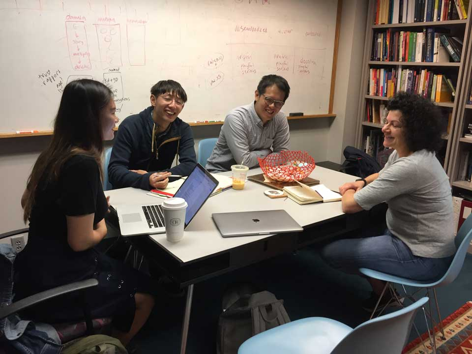
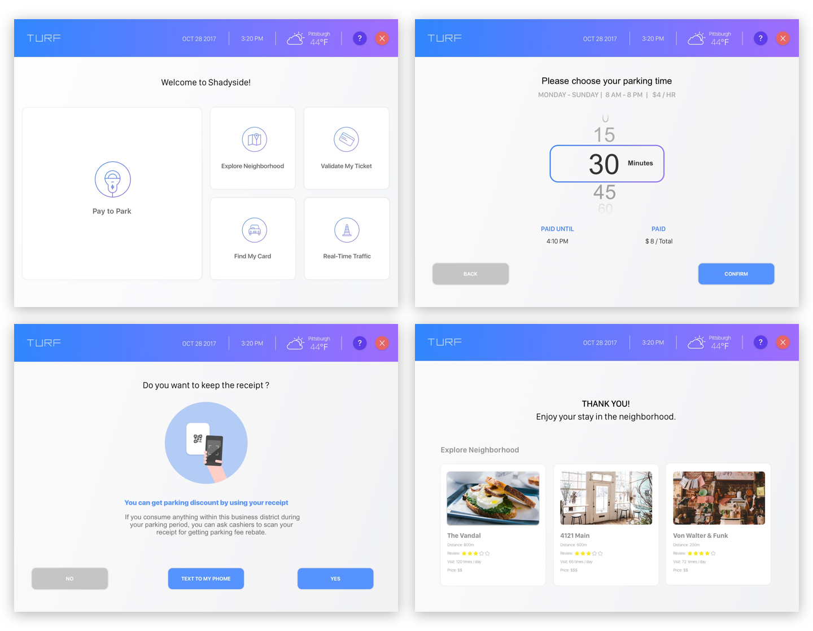

Turf: Parking for Vibrant Community
Overview
Neighborhood vibrancy depends on shopping activity and community engagement. Local businesses in Pittsburgh suffer from lower commercial patronage due to gentrification in other neighborhoods and less walkable streets in old areas. In order to help old neighborhood becomes vibrant, we want to attract more people to visit by connecting parking activity with local business. Since this is a 2-weeks project , we scope down our solution to focus on integrating a parking system to encourage users to engage in local neighborhood shopping for parking fee rebates. It also visualizes these purchases for the users as contributions to build a vibrant neighborhood. We also design for inclusivity so that people who don't own smartphones could still access to our service.
Challenge
How might we engage with and attract more people to participate in building vibrant neighborhoods?
________
From our research, we learned that:
Kiosks are inefficient and difficult to use
Users struggle to locate and use kiosks since the system is not intuitive enough to most citizens.
Park for Utilization
The goal of street parking fees is to maintain utilization. The goal in Pittsburgh is 85% occupancy.
Can’t see the impact of on-street parking
Street parking creates certain benefits to business district, but people is unaware of parking fees also go into city government for public service.
Increase Public Safety
On-street parking creates a safe barrier for pedestrians from traffic.
Process
Primary Research
We applied five research methods in our primary research:Interview, expert interview, contextual inquiry, shadowing and an online survey. We conducted 30 people in both survey and interviews, and we found out three main pain-points from the residents in Pittsburgh. The pain-points are parking spots in downtown is hard to find, parking fare is expensive, and kiosk interface is confusing for elders. For applying both contextual inquiries and shadowing methods to parking issues, we observed how residents dealt with the problems and how frustrated they feel during the process.
Interviews
As we were looking into some of the pain-points that we conducted in our interviews, we decided to move on for expert interviews. We talk to John Fournier, director at Parking & Metering in the City of Pittsburgh. He mentioned that parking fees are so important for the city government since they are one of the main revenues for the city and people is not aware how these fees are also for maintaining utilization. He said that street parking also creates a barrier for pedestrians from traffic. It creates a sense of safety. Our research shows that fewer accidents happen in these areas.

Jodi Forlizzi / Professor at HCI
Operations Manager / Mellon Square Garage
John Fournier / Director at Parking & Metering City of Pittsburgh
Territory Map
As we identified the problem that we wanted to address, we narrowed down to a group of stakeholders that will fit our concepts. We analyzed the directed and undirected stakeholders' pain-points and connected these dots together. We found that our interests land on local residents who drive and shop in the community.
User Journey
We also got insights on our user journey map and the persona we created. Our persona is Joe, a 28 years-old accountant living in the suburbs in Pittsburgh area. He needs to commute to Downtown Pittsburgh to work every day. He stressed about find parking spots on the street and anxious about getting tickets for not extending time. We analyzed the pain-points in relation to his key moments and how these factors affect his stress level during the process. From there, we found opportunities to design for interventions for these pain-points. It's essential for us to understand an emotional journey for the users to find opportunities in design.

Design Critera
Design Must
Design Should
________
Journey Overview
Design Process
Wireframes
Since we were designing for the future look of the kiosk and how the system interconnected with the local businesses and user contributions. Users will see a menu for five options (pay to park, explore the neighborhoods, find my car, validate my ticket and real-time traffic). The kiosk system also syncs with the mobile web version so users could extend parking time without downloading an app. We want to design an intuitive and smooth flow that would upgrade the current parking system in Pittsburgh. By integrating QR code to collect for rebating parking fees and visualization of contribution for public service, we encourage citizens to participate in making their community more vibrant in the future.
User Flow
The user, a driver, in this context, should quickly select parking time and go through the payment. Seamlessly send the receipt on the mobile phone and effortlessly extend time on the mobile without walking back to the parking spot. Also, by scanning QR code while shopping in the local businesses, will not only get discount from parking fee but also help the businesses to grow in the district. Lastly, by rebating user's parking fee, the user will visualize his contribution to the public service in the community. The interface of the parking kiosk and mobile web version have to be user-friendly and easy to understand so that the user will have a stress-free time when he is visiting the business district.
Design
Connecting parking system with local businesses to design for vibrant community
Unlike the current parking kiosk, Turf extends the kiosk usage by adding features such as exploring neighborhoods, finding my car, notifying real-time traffic and validating my ticket. We leverage the QR code on parking receipt for parking time extension and collecting rebate for the parking fee.
